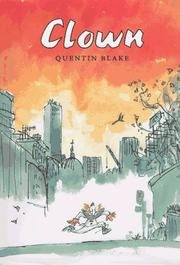
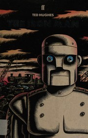
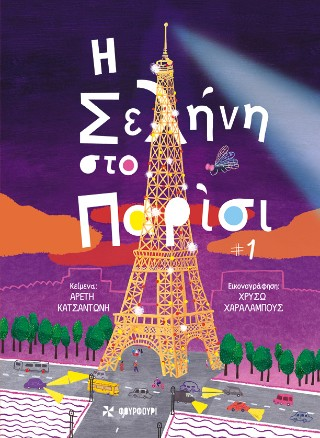
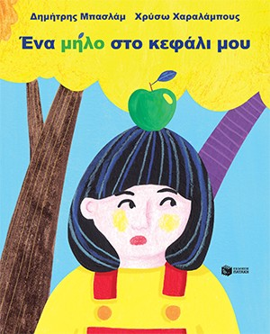
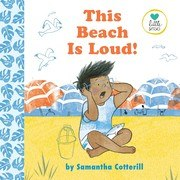
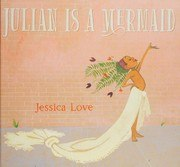
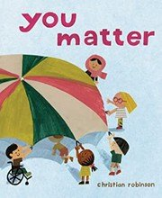
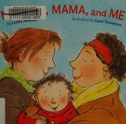
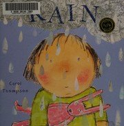

Children’s literature, literacy and education
Illustrators
Explore how illustrators use line, colour and composition to tell stories across languages and traditions.
This is a selective, non-exhaustive list of picturebook illustrators and their works. Illustrators are arranged alphabetically by surname; the books shown are selected examples, not complete bibliographies.
47 book entries
For more recommendations, explore BookTrust’s Bookfinder.
Illustrator studies
Dapo Adeola
Dapo Adeola brings energy and humour to everyday scenes through gesture and facial expression. His collaborations with Nathan Bryon, including Look Up! and Clean Up!, put a curious child at the centre of the action.
- Cover pending verification
Look Up!
Nathan Bryon
2019 · Puffin
A curious child encourages others to look up at the night sky.
- Cover pending verification
Clean Up!
Nathan Bryon
2020 · Puffin
A child helps protect a beach from litter.
- Cover pending verification
Speak Up!
Nathan Bryon
2022 · Puffin
A child finds ways to make her voice heard.
Baek Heena
Baek Heena makes picturebooks with handmade figures, built sets and photography. Small changes in lighting and posture give familiar places an unexpected sense of wonder.

알사탕 (Magic Candies)
Baek Heena (author-illustrator)
Special sweets allow a lonely child to hear voices and feelings he had not understood before. Baek Heena’s modelled scenes make familiar objects expressive; distinguish this English edition from the Korean original 알사탕.

Moon Pops
Baek Heena (author-illustrator)
During an exceptionally hot night, a melting moon becomes an unexpected source of relief. The modelled apartment building lets readers compare what different residents are doing as the shared problem unfolds.

Cloud Bread
Baek Heena (author-illustrator)
Two children bring a piece of cloud home, and their mother makes an extraordinary breakfast. Modelled domestic scenes connect a busy family morning with a light, playful flight of imagination.

I Am a Dog
Baek Heena (author-illustrator)
A family dog narrates its own view of household life and its relationship with a child. The change of narrator invites readers to reconsider familiar behaviour from someone else’s position.
Quentin Blake
Quentin Blake’s loose ink lines suggest movement and expression with a few strokes. In Clown he tells a story without words, while in Michael Rosen’s Sad Book his illustrations give grief a visual form.

Clown
Quentin Blake (author-illustrator)
A discarded toy clown travels through the city seeking help for other abandoned toys. With no written narration, gesture, pacing and changing viewpoints carry the encounters and the search for a home.

The Green Ship
Quentin Blake (author-illustrator)
Two children discover a ship-shaped garden and join its gardener in imaginary voyages. The hedge becomes both a shared play space and a way of keeping a remembered relationship present.

Mrs Armitage on Wheels
Quentin Blake (author-illustrator)
Mrs Armitage keeps adding improvements to her bicycle until ingenuity becomes spectacular overloading. The accumulating inventions give readers a visual prediction game about what might happen next.

Michael Rosen’s Sad Book
Michael Rosen (author) · Quentin Blake (illustrator)
Rosen describes sadness following his son’s death, alongside ordinary moments that continue around it. Blake’s pictures sometimes complicate the words; read with time for silence and without expecting grief to follow a fixed timetable.
Laura Carlin
Laura Carlin uses changes in scale, delicate marks and carefully placed areas of empty space to create a sense of place. Her illustrations leave details for readers to discover at their own pace.

King of the Sky
Nicola Davies (author) · Laura Carlin (illustrator)
A child newly arrived in an unfamiliar town develops a connection with an older man and his racing pigeon. Carlin’s atmospheric pictures hold uncertainty and hope together without making belonging an instant transformation.

The Promise
Nicola Davies (author) · Laura Carlin (illustrator)
A young thief’s encounter with a bag of seeds changes the course of her journey. The gradual arrival of colour gives the environmental transformation a visible rhythm; ask who can make and sustain change in shared spaces.

The Iron Man
Ted Hughes (author) · Laura Carlin (illustrator)
A giant metal figure unsettles a community before confronting a threat beyond it. Carlin’s illustrations offer a particular interpretation of Hughes’s story; compare this illustrated edition with other visual versions rather than treating it as an original picturebook.

A World of Your Own
Laura Carlin (author-illustrator)
Carlin begins with observed objects and moves towards an invented world. The open-ended visual examples encourage readers to make choices about scale, materials and the rules their own imagined place might follow.
Hanna Cha
Hanna Cha illustrates stories that draw on family memory and folklore. In The Truth About Dragons, shifts in setting and palette bring different storytelling traditions into the same book.
- Cover pending verification
Tiny Feet Between the Mountains
Hanna Cha
2019 · Simon & Schuster
A small child proves her resourcefulness in a Korean-inspired mountain tale.
- Cover pending verification
The Truth About Dragons
Julie Leung
2023 · Henry Holt
A mother tells her child stories of dragons from different cultural traditions.
Chryso Charalambous (Χρύσω Χαραλάμπους)
Chryso Charalambous illustrates children’s books in Greek. Her work includes Η Σελήνη στο Παρίσι and Ένα μήλο στο κεφάλι μου, both featured in the Greek-language books on this site.

Η Σελήνη στο Παρίσι
Αρετή Κατσαντώνη; illustrated by Χρύσω Χαραλάμπους
Greek · 2024 · Εκδόσεις Φουρφούρι · ISBN 9786185819163
The yellow Eiffel Tower stands out against the dark city palette.
Edition and cover details
Ένα μήλο στο κεφάλι μου
Δημήτρης Μπασλάμ · Χρύσω Χαραλάμπους
Greek · Εκδόσεις Πατάκη · ISBN 9786180711516
A visually playful Greek-language picturebook that invites attention to the relationship between its title, characters and illustrated situations. Explore the pictures alongside a fluent reader of Greek so that interpretation can be checked against the original text.
Charlene Chua
Charlene Chua illustrates picturebooks about family life, food and identity. In Amy Wu and the Perfect Bao, her pictures turn the movements of making bao into part of the storytelling.
- Cover pending verification
Hug?
Charlene Chua
2020 · Kids Can Press
A playful picturebook about affection and boundaries.
- Cover pending verification
Going Up!
Sherry J. Lee
2020 · Kids Can Press
Neighbours travel together in a lift on their way to a party.
Samantha Cotterill
Samantha Cotterill uses composition and visual details to bring sensory experiences into view. In This Beach Is Loud!, the busy beach helps readers understand how overwhelming an outing can feel.
- Cover pending verification
Nope. Never. Not for Me!
Samantha Cotterill
2019 · Dial Books
A child cautiously explores unfamiliar foods.

This Beach Is Loud!
Samantha Cotterill
2019 · Dial Books
A seaside trip becomes overwhelming for a child with sensory sensitivities.
- Cover pending verification
Can I Play Too?
Samantha Cotterill
2020 · Dial Books
A child navigates social play and sensory needs.
Julie Flett
Julie Flett creates picturebooks in which colour, space and seasonal change connect people, animals and places. Her illustrations often make quiet encounters central to the story.

Birdsong
Julie Flett (author-illustrator)
A child settling into a new home develops a friendship with an older neighbour through art and the changing seasons. Quiet visual details connect creativity, attention to place and the passage of time.

We All Play
Julie Flett (author-illustrator)
Children and animals move, rest and play across a series of scenes. Flett’s images connect human activity with the wider living world; attend to the Cree language where included in the edition being shared.

My Heart Fills with Happiness
Monique Gray Smith (author) · Julie Flett (illustrator)
Small experiences, from familiar food to music and shared movement, become sources of joy. The brief text leaves space for readers to name their own experiences without assuming everyone finds comfort in the same things.

Still This Love Goes On
Buffy Sainte-Marie (author) · Julie Flett (illustrator)
Images accompany Buffy Sainte-Marie’s song, connecting affection, home and the passing seasons. Compare how the printed pictures and a listening experience shape the pace and feeling of the words.
Vashti Harrison
Vashti Harrison uses expressive portraits, light and colour to convey changes in feeling. In Sulwe, shifts between everyday and imagined scenes support the story’s exploration of colourism.
- Cover pending verification
Big
Vashti Harrison
2023 · Little, Brown
A child confronts the ways others judge her body.
- Cover pending verification
Little Leaders: Bold Women in Black History
Vashti Harrison
2017 · Little, Brown
Illustrated portraits celebrate influential Black women.
- Cover pending verification
Hair Love
Matthew A. Cherry
2019 · Kokila
A father learns to style his daughter’s hair.
Frané Lessac
Frané Lessac paints colourful scenes that reward attention to local details. Her work ranges from the illustrated places in A Is for Australia to historical picturebooks made with Mark Greenwood.

Simpson and His Donkey
Mark Greenwood · Frané Lessac
2008 · Walker Books Australia · ISBN 9781921150180
A picturebook retelling of Gallipoli through the work of a stretcher-bearer and his donkey. Read with historical context for older primary readers.

A Is for Australia
Walker Books Australia
An illustrated alphabet of places across Australia, with details to find and compare on each spread.
Jessica Love
Jessica Love uses expressive poses and generous space around her figures. In Julián Is a Mermaid, wordless sequences let readers follow Julián’s delight and imagination through movement.

Julián Is a Mermaid
Jessica Love
2018 · Candlewick Press
A child finds affirmation for his imaginative self-expression.
- Cover pending verification
Julián at the Wedding
Jessica Love
2020 · Candlewick Press
Julián attends a wedding and makes a new friend.
- Cover pending verification
A Bed of Stars
Jessica Love
2023 · Candlewick Press
A parent and child explore the night sky together.
William Low
William Low uses light and carefully observed street scenes to give places a sense of depth and daily life. In Chinatown, the paintings let readers linger over the details of a neighbourhood.
- Cover pending verification
Old Penn Station
William Low
2007 · Henry Holt
A visual portrait of New York’s historic railway station.
- Cover pending verification
Machines Go to Work
William Low
2009 · Henry Holt
Detailed illustrations invite children to explore working vehicles.
Stanislav Marijanović
Stanislav Marijanović is a Croatian author and illustrator who uses encyclopaedias and field guides as models for comic picturebooks. His illustrated monster books make imaginary creatures look like subjects of serious study.

Enciklopedija čudovišta
2008 · Sipar · Zagreb
Invented monsters are presented as entries in a reference work.
Edition and cover details- Cover pending
Kućna čudovišta: ilustrirani priručnik
1997 · Sipar · Zagreb
An illustrated handbook that imagines a hidden population of domestic monsters.
Edition and cover details - Cover pending
Enciklopedija čovjeka – pisana rukom čudovišta
2009 · Sipar · Zagreb
An encyclopedia that imagines humans as the subject of a monster’s observations.
Edition and cover details
Sheila McGraw
Sheila McGraw illustrated Robert Munsch’s Love You Forever. Her pictures trace a mother and son through changing stages of life, showing the reversal of care across generations.

Love You Forever
Robert Munsch · illustrated by Sheila McGraw
· Firefly Books · paperback ISBN 9780920668375
Canada
One of my favourite picturebooks. The illustrations follow the relationship between a mother and son through changing stages of life.
- Cover pending verification
I Promise I’ll Find You
Heather Patricia Ward
Edition details pending
A reassuring story about a parent’s determination to find a child.
- Cover pending verification
My Mother’s Hands
Paul Cline
Edition details pending
An illustrated celebration of a mother’s caring hands.
- Cover pending verification
I Love You Too, I Love You Three
Wendy Tugwood
2016 · edition details pending
A picturebook about the affection shared within a family.
Roger Mello
Roger Mello is a Brazilian author and illustrator who uses line, colour and page turns to structure stories first published in Portuguese. In João by a Thread, patterned lines help carry the story across the page.

João by a Thread
Roger Mello · translated by Daniel Hahn
Elsewhere Editions
Threads and patterns give shape to a child’s imagined journey.

Griso, the One and Only
Roger Mello · translated by Daniel Hahn
Elsewhere Editions
The search for another unicorn takes Griso through landscapes drawn in different visual styles.

Charcoal Boys
Roger Mello · translated by Daniel Hahn
Elsewhere Editions
A wasp narrates a story about children working in charcoal production. Preview for discussions about child labour.
Lydia Monks
Lydia Monks uses bright colour and collage in her picturebook illustrations. In What the Ladybird Heard, the illustrations let readers follow a plan across the farmyard.
- Cover pending verification
What the Ladybird Heard
Julia Donaldson
2009 · Macmillan
A clever ladybird devises a plan to protect farm animals.
- Cover pending verification
The Singing Mermaid
Julia Donaldson
2012 · Macmillan
A mermaid seeks freedom after joining a travelling circus.
- Cover pending verification
The Princess and the Wizard
Julia Donaldson
2006 · Macmillan
A princess uses ingenuity to escape a wizard.
Patricia Mullins
Patricia Mullins uses cut and torn paper to build expressive animals and lively settings. Compare the gradually revealed fox in Hattie and the Fox with her illustrations for Celeste Walters’s Only a Donkey.

Only a Donkey
Celeste Walters · Patricia Mullins
2008 · Picture Puffin paperback · ISBN 9780143501220
A teased farm donkey has a dream that connects the animals’ journey with the Australian story of Simpson and his donkey. Themes include war and remembrance.

Hattie and the Fox
Mem Fox · Patricia Mullins
Simon & Schuster · ISBN 9780689716119
The cut-paper illustrations gradually reveal what Hattie can see in the bushes.
Helen Oxenbury
Helen Oxenbury gives family stories much of their warmth through gesture and expression. Her illustrations for So Much! and We’re Going on a Bear Hunt make group movement easy to follow.
- Cover pending verification
We’re Going on a Bear Hunt
Michael Rosen
1989 · Walker Books
A family crosses landscapes in a rhythmic adventure.
- Cover pending verification
Ten Little Fingers and Ten Little Toes
Mem Fox
2008 · Walker Books
Babies from different places share playful similarities.
- Cover pending verification
Alice’s Adventures in Wonderland
Lewis Carroll
1999 · Walker Books illustrated edition
Oxenbury reimagines Carroll’s classic with expressive watercolours.
Květa Pacovská
Květa Pacovská used collage, bold colour and typography to make books that invite close looking and handling. In Alphabet, letters become visual forms to explore.

Midnight Play
A theatrical setting lets readers follow shapes and characters as they reappear across the book.
Christian Robinson
Christian Robinson uses bold shapes and blocks of colour to tell stories across everyday and imagined settings. His pictures give small gestures and relationships room to stand out.
Official website · Publisher profile

Another
Christian Robinson (author-illustrator)
A child enters a sequence of parallel worlds where familiar arrangements return with differences. Wordless repetition makes comparison part of the adventure and invites questions about perspective and possibility.

You Matter
Christian Robinson (author-illustrator)
Changes in viewpoint connect tiny organisms, large creatures and people across time. The pictures complicate the short affirmations by showing dependence, difficulty and the different scales at which a life can matter.

Last Stop on Market Street
Matt de la Peña (author) · Christian Robinson (illustrator)
CJ and his grandmother ride a bus across the city, noticing people and places along the way. Their different responses invite discussion of inequality, community and the meanings of service without treating material hardship as merely a change of attitude.

School’s First Day of School
Adam Rex (author) · Christian Robinson (illustrator)
A new school building wonders what will happen when children arrive. Giving the building a voice makes first-day uncertainty visible from an unexpected perspective, alongside the children’s own reactions.
Francesca Sanna
Francesca Sanna uses bold silhouettes and shifts in scale to depict experiences that can be difficult to put into words. In The Journey, looming shapes give a child’s account of forced migration visual weight.

The Journey
Francesca Sanna
2016 · Flying Eye Books
A family flees conflict and searches for safety.
- Cover pending verification
Me and My Fear
Francesca Sanna
2018 · Flying Eye Books
A child learns to live with fear in a new country.
Axel Scheffler
Axel Scheffler gives the animals and fantastical creatures in The Gruffalo and Room on the Broom expressive faces and busy settings. Look for visual jokes that continue beyond Julia Donaldson’s rhyming text.
- Cover pending verification
The Gruffalo
Julia Donaldson
1999 · Macmillan
A resourceful mouse invents a monster while walking through a wood.
- Cover pending verification
Room on the Broom
Julia Donaldson
2001 · Macmillan
A witch welcomes companions on her broom.
- Cover pending verification
Stick Man
Julia Donaldson
2008 · Alison Green Books
A stick tries to find his way back to his family.
Sydney Smith
Sydney Smith uses cropping, light and colour to show how a place feels from a child’s point of view. In Small in the City, pictures let readers work out more about the child’s journey than the words explain.
Official website · Official website

Small in the City
Sydney Smith (author-illustrator)
A child moves through a busy winter city, offering advice that gradually reveals a more personal search. Sound, weather and changes in viewpoint make the streets feel different from a small person’s position.

Town Is by the Sea
Joanne Schwartz (author) · Sydney Smith (illustrator)
A boy’s coastal day unfolds above the coal mine where his father works. Smith’s contrasting light and darkness connect ordinary childhood experience with labour, risk and a possible future.

I Talk Like a River
Jordan Scott (author) · Sydney Smith (illustrator)
A boy who stutters finds a different way to understand his speech during a visit to a river with his father. Changes in light and movement offer an image of speaking that resists measuring a voice only by fluency.

My Baba’s Garden
Jordan Scott (author) · Sydney Smith (illustrator)
A child remembers daily routines with a grandmother, including her gardening and care for living things. The pictures make affection visible through small repeated actions rather than a single declaration.

Do You Remember?
Sydney Smith (author-illustrator)
A mother and child recall experiences from an earlier home while adjusting to a new one. Light, texture and shifts between past and present let ordinary memories carry both uncertainty and connection.
Mika Song
Mika Song illustrates the Henry books written by Jenn Bailey. Small changes in expression, posture and distance between characters help readers follow Henry’s experience of the classroom.
- Cover pending verification
A Friend for Henry
Jenn Bailey
2019 · Chronicle Books
Henry searches for a friend who understands him.
- Cover pending verification
Donut Feed the Squirrels
Mika Song
2020 · Random House Graphic
Two squirrels embark on a mischievous doughnut adventure.
- Cover pending verification
Pizza My Heart
Mika Song
2022 · Random House Graphic
The squirrel friends pursue another food-filled escapade.
Carol Thompson
Carol Thompson illustrates board books and picturebooks that attend to young children’s movement, play and family routines. Her figures often tell the story through gesture and posture.

Mommy, Mama, and Me
Lesléa Newman · Carol Thompson
2009 · Tricycle Press · ISBN 9781582462639
A toddler spends the day with two mums in a rhyming board book.

Daddy, Papa, and Me
Lesléa Newman · Carol Thompson
2009 · Tricycle Press · ISBN 9781582462622
Rhythmic words and images follow a toddler and two dads through everyday play and care.

Whatever the Weather: Rain
2014 · Child’s Play · ISBN 9781846436833
A board book about the sensations and movement of playing out in the rain.
Yu Rong
Yu Rong uses paper-cut shapes, texture and line to convey movement and sensation. In Shu Lin’s Grandpa and The Visible Sounds, changes in scale and composition shape how readers experience each scene.

Shu Lin’s Grandpa
Matt Goodfellow (author) · Yu Rong (illustrator)
A newcomer’s place in her classroom begins to change when her grandfather shares his art. The fold-out visual sequence gives the class a different way to communicate and invites questions about who is expected to do the work of belonging.

The Visible Sounds
Yin Jianling (author) · Yu Rong (illustrator)
A girl experiences sound differently after losing her hearing. Yu Rong’s visual language offers ways to discuss perception and communication without assuming all deaf people share the same sensory experience.

The Boy Who Loves to Lick the Wind
Fiona Carswell (author) · Yu Rong (illustrator)
A mother and child attend to the world through movement and sensory experience. The pictures invite readers to notice the child’s agency and interests rather than measuring communication only through spoken language.

Ming the Panda
Jake Hope (author) · Yu Rong (illustrator)
A panda’s story becomes a way to explore how an individual animal is seen and represented. Look closely at Yu Rong’s cut-paper forms and how the setting shapes the reader’s attention.

Tracks of a Panda
Nick Dowson (author) · Yu Rong (illustrator)
A panda’s movements connect scenes and encounters across the pages. Follow the visual trail and compare how words and pictures guide the reader through the landscape.
Selected covers from publishers. Additional edition covers supplied by Open Library where available.
↑